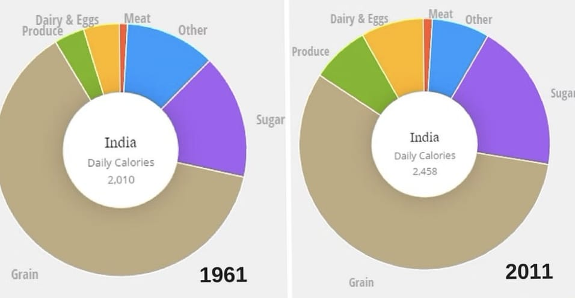
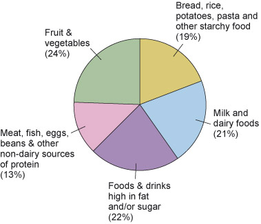

The study found that many people especially this generation people are mostly like to eat modern food (60%), spicy food (78%), and Non-Vegetarian food (60%). The determinates of food choices/like; such as – good taste, healthful food, good nutrition, hygienic, low cost, good quality and convenience food found very important for choose/like a food.
The Indian life style has changed tremendously since independence. Food and taste has followed the same trend of change. As food is an important part of one’s life style. It is said some people eat to live and some people live to eat. Industrialization of food industry has changed our plate; earlier fresh food constituted most of our meal, whereas now it has been replaced with processed food. Food choices among the people vary from their culture, family background, society and living standard. Eating behavior of people have been found to be affected by several different factors such as availability of time, discipline, self control, society, price, budget limit, option available etc. It has been observed that many people prefer to eat fast-food mostly. These constraints may have affected the outcomes Nagla (2007) concluded that the consumption pattern is changing in Indian household; green leafy vegetables are least preferred may be due the length of time consumed during the preparation process, viz. cleaning, washing, chopping, and finally, the cooking. In addition to this, method of preparation and cooking has become more and more advance with the use of ultra modern equipments and fuels.
Study investigated the variable affecting fast food performance of customers in India. The study revealed that the key elements laying the impact on the consumers food choice were passion for dining out, socialize, ambience and the taste in urban India. The study found that the people preferences for food are positively associated with their gender and profiles. She revealed that among these, males consider cost, taste and quality while choosing food over quality and nutritional value. However, in case of whites showed different preference than others, location of food outlet and nutritional value of food were found to affected by gender.
In 1961 the average Indian had a daily calorie intake of 2,010. Their daily diet consisted of 43% grains (378g), 23% produce (199g), 12% dairy & eggs (108g), 12% sugar and fat (108g), 2% meat (17g) and 8% as other (68g).
In 2011 the average Indian had a daily calories intake of 2,458. Their daily diet consisted of 34% produce (450g), 32% grains (416g), 18% eggs and dairy (235g), 10% sugar and fat (129g), 2% meat (29g) and 4% as other (58g).
Majority of people were introduced to fast foods through television commercials 193(64.3%). 73(57%) developed this habit as they were bored with home food. Awareness of harmful effects of fast food consumption was known to 186(62%) students and this was found to be associated with the perceived need to control its usage (p<0.001). Parental consumption of fast foods was found to influence fast food consumption among children (p=0.024). As many as 68(22.7%) and 206(68.7%) children were not eating vegetables and fruits respectively every day. Increased frequency of fast food consumption in a week was found to be associated with overweight or obesity among children after adjusting the effects of confounders (p=0.003).
cereals and more bread, fewer potatoes and more meats, fewer bidis and more cigarettes, less country liquor and more beer — food habits in India are sharply circumscribed by class, new data shows. The newly released 558th round of the National Sample Survey Office, India’s official source of consumption, employment and others statistics, shines a light on India’s consumption habits as of 2011-12. An analysis of data on food and non-food consumption by income group reveals how much of an effect class has on what Indians eat. The top 5 per cent of urban India spends Rs. 3,000 per capita per month on groceries and eating out on average. This class spends nearly Rs. 800 per head per month on eating out (“served processed food”) and another Rs. 206 per person per month on chips, chocolates and other packaged processed foods. At the other end of the spectrum, the bottom 5 per cent of India spends just over Rs. 400 per person per month on food, over a quarter of this on cereals alone. “On the whole, there is a general decline in the consumption of cereals but this is in line with ongoing, expected trends,”. “The share of the household budget that goes towards food is also declining, as expected,”. “As countries get richer and as individuals have more money and are in less strenuous activities, consumption of carbohydrates goes down, and the intake of fruits and vegetables as well as foods with other micronutrients including milk products and meat rises,”
In urban India, where the richest 5 per cent consume the fewest cereals and the most derivatives of cereals like bread and noodles. However in rural India, the richest 5 per cent still consume the most cereals.
At higher ends of the income distribution, the consumption of milk, eggs, meat and processed foods rises. On average, fish is India’s most popular non-vegetarian product; the average Indian household consumes 1.14 kg of fish in a month.
As for the conclusion of this blog, the traditional Indian food culture should not be forgotten by every generation as
it shows the identity of the Indian people itself in terms of culture and norms. Each of the instruments has its own tales
and sentimental values along with it. Without them, the indian food will not have its own distinctiveness and cannot
achieve the accomplishment that can be seen nowadays.
Thus, several commendations should be made in supporting the cultures in order to preserve it for longer period: